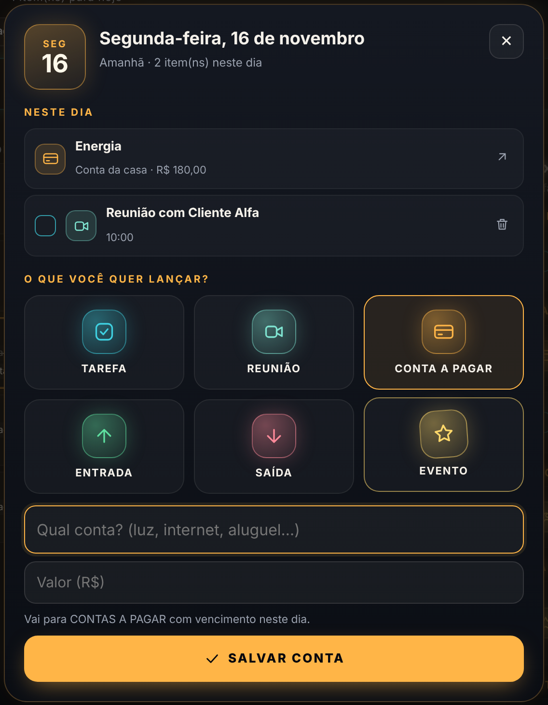
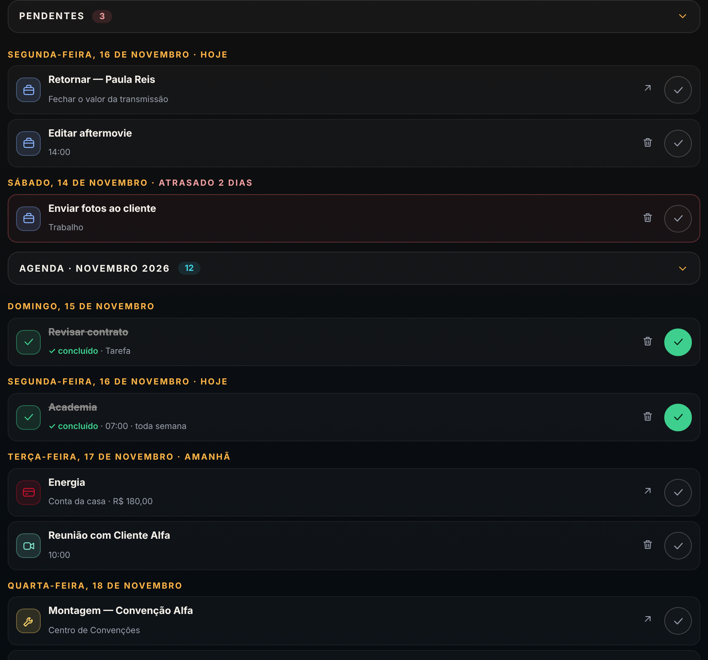

Calendário do mês com as abas PENDENTES e AGENDA ao lado.
Tarefas do dia a dia, contas a pagar, custos fixos, cachês e eventos — tudo no mesmo calendário, cada um com a sua cor.
Setas, mês, ano e HOJE navegam; grade e lista trocam a vista; os filtros mostram ou escondem cada tipo.


A lista tem duas abas, cada uma com a seta para abrir e fechar:
PENDENTES — já passou ou é hoje e não foi concluído (em vermelho). AGENDA — o que vem pela frente e o já concluído, com ✓ verde.
O ✓ vale para tarefa, evento, montagem, conta (fica paga), custo fixo, cachê e retorno de cliente. Tocou sem querer? Toque de novo. O concluído sai do sino de avisos.
Na barra com ✦ escreva uma frase: dentista sexta 15h vira tarefa na sexta às 15h; pagar luz 180 dia 20 vira conta a pagar; recebi R$ 2.500 hoje vira entrada no caixa.